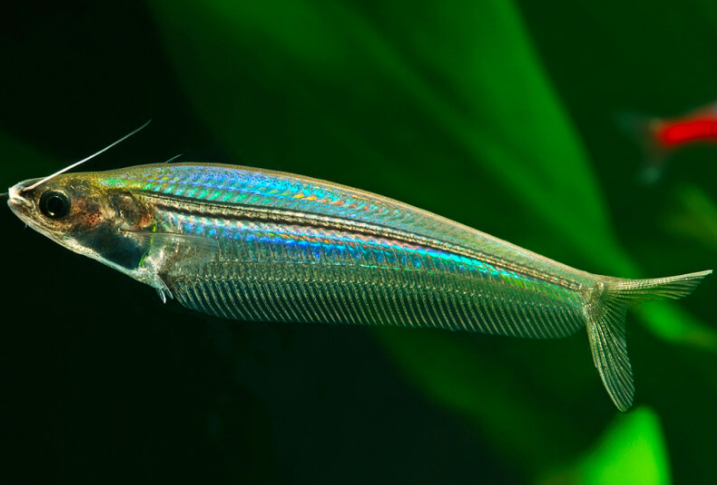

Systématique
- Ordre : Siluriformes
- Famille : Siluridae
- Genre : Kryptopterus
- Espèce : K. bicirrhis

Kryptopterus bicirrhis est souvent confondu avec le "vrai" poisson de verre (*K. vitreolus*), mais il s'agit d'une espèce bien distincte et nettement plus grande.
Il peut atteindre 12 à 15 cm à l'âge adulte. Contrairement à son petit cousin qui est transparent comme du cristal, *K. bicirrhis* est plutôt translucide ou "laiteux", avec des reflets irisés. Son corps laisse passer la lumière mais ne permet pas de voir distinctement à travers. Il possède souvent quelques petites taches noires éparses sur les flancs.
C'est un poisson actif et impressionnant, mais sa taille le réserve à de grands aquariums, ce qui explique qu'il soit moins fréquent dans le commerce grand public.
Comme tous les *Kryptopterus*, c'est un poisson pélagique (pleine eau) et grégaire. Il doit être maintenu en banc d'au moins 6 à 8 individus.
Il est relativement paisible avec les poissons de taille similaire, mais attention : sa bouche est plus grande que celle du *vitreolus*. Étant opportuniste, il peut prédater de très petits poissons (alevins, micro-rasboras) s'ils passent à sa portée, surtout la nuit. Il nage souvent à contre-courant.
Mode : ovipare.
La reproduction en aquarium est extrêmement rare et accidentelle. Dans la nature, elle a lieu pendant la saison des crues, lorsque les poissons migrent vers les zones inondées des forêts.
Dimorphisme sexuel : Difficile à observer hors période de frai. Les femelles sont généralement un peu plus grosses et plus larges au niveau du ventre.
Espérance de vie : Environ 5 à 8 ans.
Il est largement répandu en Asie du Sud-Est : Thaïlande, Laos, Vietnam, et dans les grandes îles d'Indonésie (Sumatra, Bornéo, Java). Il fréquente les grands fleuves (Mékong, Chao Phraya) et les plaines inondables aux eaux souvent turbides (boueuses) et courantes.
Répartition

Origine naturelle :
- Asie du Sud-Est.
- Indonésie (Sumatra, Java, Bornéo).
- Thaïlande, Laos, Vietnam.
- Bassin du Mékong.
Paramètres de maintenance
Température : 22 à 28 °C.
pH : 6,0 à 7,5.
GH : 5 à 15 °dGH.
Volume conseillé : Minimum 250 à 300 L. En raison de sa taille adulte (15 cm) et de son besoin de vivre en banc, il nécessite un grand volume de nage libre.
Régime alimentaire
Régime : carnivore / omnivore.
Dans la nature, il mange des crustacés, des insectes et des petits poissons.
En aquarium, il est vorace et accepte tout : granulés, paillettes, mais il apprécie particulièrement les proies plus consistantes comme les vers de vase, les artémias adultes ou le krill.